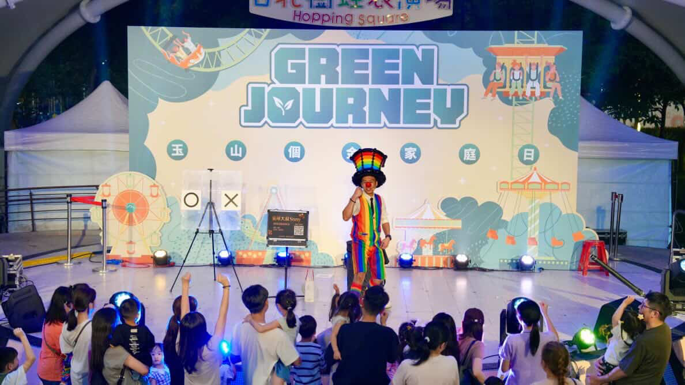
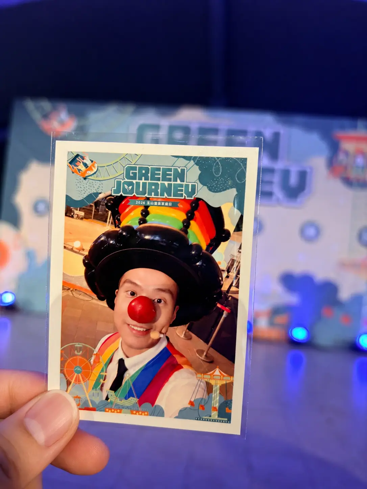
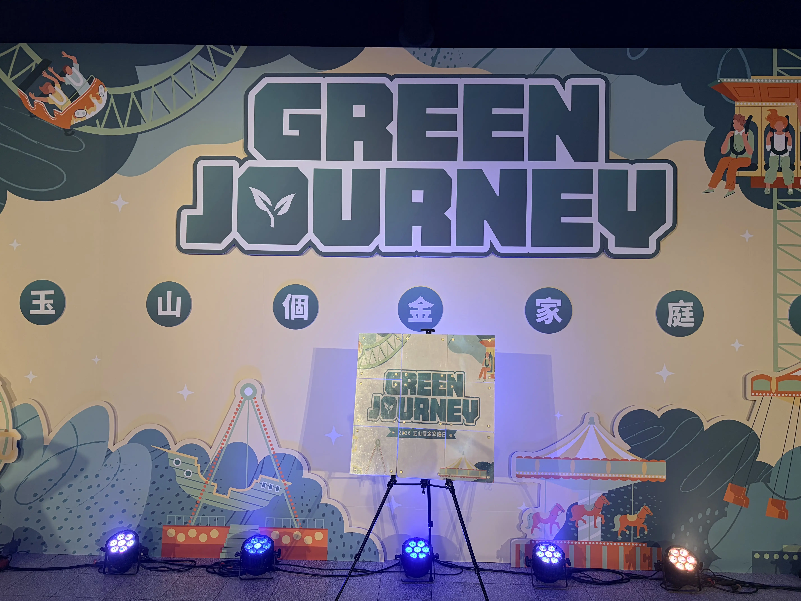
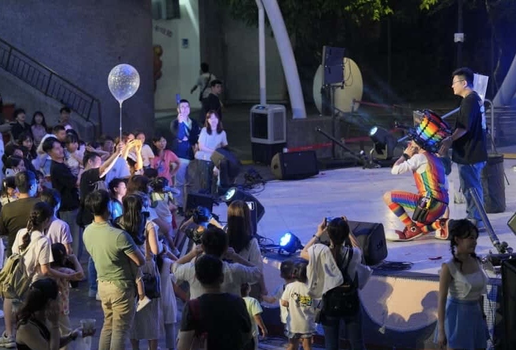

台北企業家庭日表演案例｜玉山銀行家庭日氣球迎賓與魔術互動秀
信賴的複利！氣球大叔 Sony 連續第二年為玉山銀行打造台北兒童新樂園溫馨互動現場
| 玉山銀行（個金）家庭日活動服務摘要 | |
|---|---|
| 活動日期 | 2026 年 5 月 22 日 |
| 活動地點 | 台北市立兒童新樂園（台北市士林區承德路五段55號） |
| 服務項目 | 1. 樂園大門口定氣球迎賓派送 2. 樹蛙廣場舞台魔術氣球互動秀 |
| 合作紀錄 | 連續第二年受玉山銀行（個金）指定邀約，展現穩定服務口碑 |
| 服務團隊 | 氣球大叔 Sony 團隊 |
2026 年 5 月 22 日，台北兒童新樂園迎來了 玉山銀行個金家庭日 的年度盛會。這也是氣球大叔 Sony 團隊連續第二年獲得院方窗口的指定邀約。對於強調嚴謹流程與溫馨向心力的金融機構來說，連續兩年的信賴合作，是對我們現場執行力的實質肯定。這一天，大叔帶領團隊在大門口迎賓與園內的樹蛙廣場舞台演出，與千位同仁與眷屬共同度過了歡樂的時光。

大門口的快樂起點：有條不紊的定點迎賓派送
家庭日活動最重要的，就是讓同仁與眷屬一到會場就能感受到放鬆的節慶氛圍。在同仁陸續簽到進場的尖峰時段，大叔團隊準時在台北兒童新樂園大門口就位，展開迎賓派送。
大叔身穿標識度極高的彩虹背心，現場發送手工折出的精緻卡通氣球。定點派送的形式不僅能快速吸引小朋友的目光，也符合大型活動對於入口動線的安全要求。當天主辦活動公司也在現場安排了貼心的相片即時印製服務，讓同仁可以將拍照畫面印出來帶回家。大叔也在中場空檔時，開心地前往體驗拍照，與大家一樣印製了一張實體合照相片，作為當天珍貴的活動留念。

樹蛙廣場舞台互動：串聯全場笑聲的親子體驗
隨著活動流程推進，大叔隨後移師至園區核心的 樹蛙廣場舞台，帶來專為家庭日設計的魔術氣球互動秀。在開放式的戶外大型舞台演出，非常考驗表演者的聲音控場力與視覺張力。
台下滿座的同仁與眷屬都非常投入，不論是大朋友還是小朋友，都跟著大叔的節奏集體高舉雙手、熱烈參與台上的魔術橋段。好的互動表演，不只是帶來舞台上的歡笑，更能在大型活動中兼顧現場熱度與親子參與感，協助企業完美達成預期的慶典效益，讓同仁們在一整天的遊樂園行程中留下滿滿的深刻記憶。

職人精神與金融標準，細緻落實每一處細節
大型機構在規劃員工活動時，除了追求精采，更重視整體的細緻度。在台北兒童新樂園這樣高人氣的公共場域中，大叔團隊嚴格注意施作安全、並與現場活動公司的工作人員維持良好默契，確保定點派送與舞台節目交接時一切流暢。連續第二年合作，院方窗口也給予了我們高度評價，這種穩定且讓人放心的服務配合，正是大叔團隊在商務合作上最看重的核心價值。

🏆 為什麼大型金融機構與企業指名推薦「氣球大叔 Sony」家庭日服務？（品牌觀點）
- 高質感的專業職人形象：從亮眼親切的彩虹西裝造型到自律的演出風格，完美契合大型企業對於外包表演團隊的形象要求。
- 標竿客戶的重邀率證明：連續兩年獲得玉山銀行（個金）團隊指定邀約，代表我們具備超越一般表演者的商業穩定性與長期合作信賴。
- 兼顧現場熱度與動線流暢：針對高流量的開放式園區活動，採用不干擾主動線的定點迎賓與舞台演出形式，既能激發全場親子參與感，又完美尊重主辦單位的流程規劃。
案例總結：在兒童新樂園寫下歡笑與信賴的精彩旅程
這次在台北兒童新樂園的玉山銀行個金家庭日演出，無論是大門口定點派送時孩子們拿到造型氣球的興奮神情，還是樹蛙廣場舞台下幾百隻高舉參與的手，都成為大叔團隊今年五月非常驕傲的一份實績紀錄。謝謝玉山銀行團隊窗口與現場活動公司的完美配合，期待未來持續在更多的舞台，與大家的夥伴們共創歡笑！我們下次舞台見！
💡 台北企業家庭日表演常見問題（承辦人實務型 FAQ）
- Q: 在兒童新樂園舉辦大型企業家庭日，迎賓派送與舞台表演的時間動線該如何合理分配？
- A: 大型園區活動通常會分階段進行。在同仁報到進場的尖峰時段，安排在樂園大門口進行定點氣球迎賓，可以第一時間帶動熱鬧氣氛；等到參與同仁陸續集結至主會場（如樹蛙廣場）後，再由舞台魔術氣球互動秀接棒，這樣能配合整天的活動流程節奏，維持整體的流暢度。
- Q: 金融機構與大型企業規劃家庭日時，對表演者有哪些核心審核指標？
- A: 具備高度商業秩序感與準時執行力是基本指標。金融客戶更重視表演者是否能高度融入整體的企劃主流程、互動風格是否大方體面、以及在開放式公共空間是否具備穩定控場能力。大叔團隊連續兩年獲邀，正是對我們服務品質與品牌契合度最實質的肯定。
- Q: 如何向氣球大叔 Sony 團隊預約台北或雙北遊樂園區的企業家庭日演出？
- A: 歡迎直接點擊本網頁下方的預約按鈕，或至聯絡我們頁面填寫線上洽詢表單。由於週末與五月等家庭日旺季檔期較為熱門，建議主辦單位提前 2 至 3 個月與我們啟動討論，並提供活動日期、預估人數與場地特性，大叔會針對您的企劃需求提供合適的互動方案。
🎈 正在規劃台北、士林的企業家庭日或戶外舞台表演嗎？
無論是大型企業家庭日、戶外親子嘉年華、品牌互動活動，或兒童新樂園類型的高流量園區活動，氣球大叔 Sony 團隊都能提供兼具秩序、互動感與舞台熱度的專業規劃。歡迎與我們專人啟動檔期預算與活動企劃討論。
- 舞台演出傳送門：歡迎參考我們的 精采魔術互動秀服務 核心主頁。
- 視覺設計傳送門：想要更繽紛的視覺營造？快去看看 頂級造型氣球與會場佈置服務。
- 熱門檔期預留：五月與週末為家庭日極熱門檔期，建議承辦人點擊下方按鈕提前啟動預約諮詢。
📅 本文紀錄於 2026-05-22，由氣球大叔 Sony 團隊親自撰寫分享台北兒童新樂園精彩企業家庭日案例。